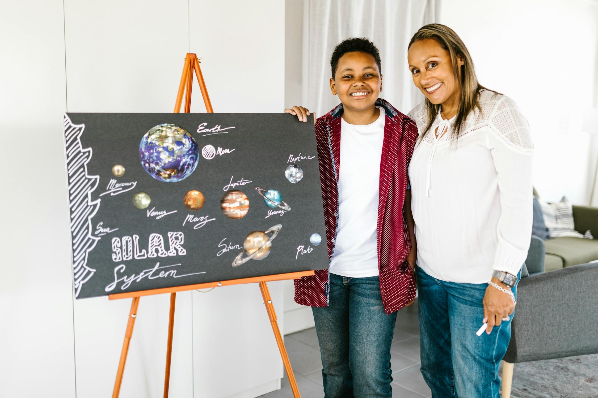

Conheça minhas atividades

Aprender Pode Ser Divertido: Atividades Lúdicas no Reforço Escolar
Utilizamos jogos e atividades lúdicas para tornar o aprendizado mais divertido e eficaz.Essa abordagem estimula a criatividade e facilita a compreensão dos conteúdos escolares.
Diagnóstico Personalizado: O Primeiro Passo para o Sucesso Acadêmico
Realizamos uma avaliação inicial para identificar as necessidades de cada aluno. Com base nisso, elaboramos um plano de estudo individualizado, focado em suas dificuldades específicas.

Parceria Escola-Família: Juntos na Jornada do Aprendizado
Acreditamos na parceria entre escola e família. Mantemos uma comunicação constante com os responsáveis, oferecendo orientações para apoiar o aprendizado também em casa.